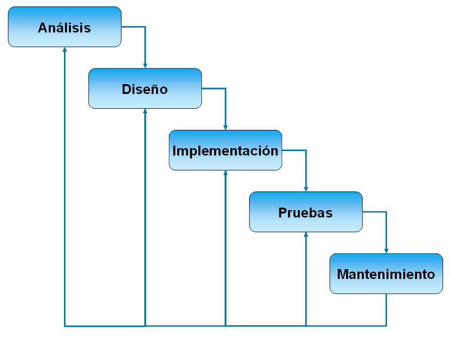
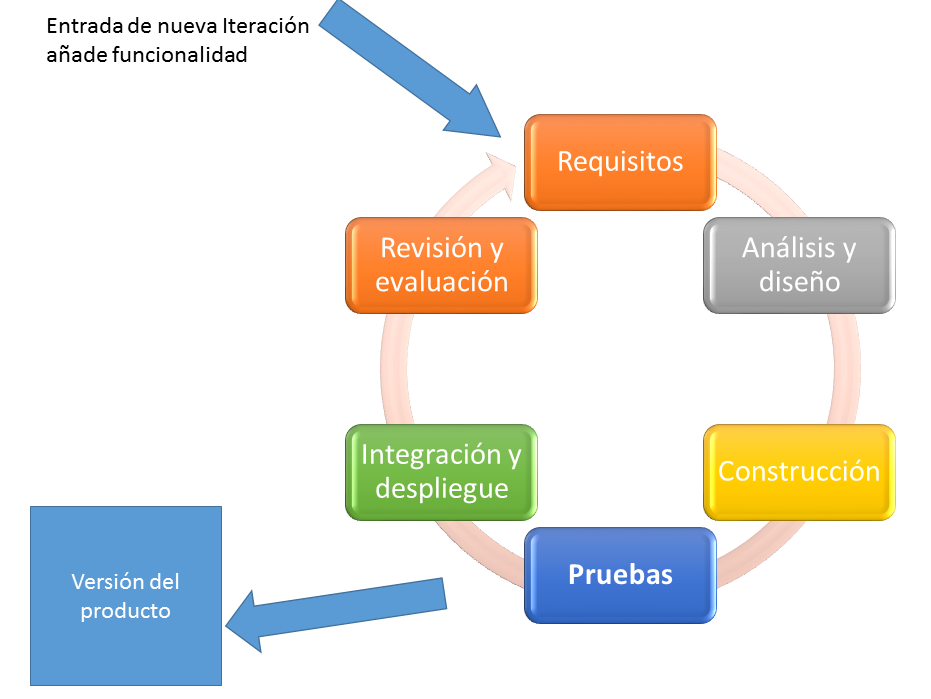
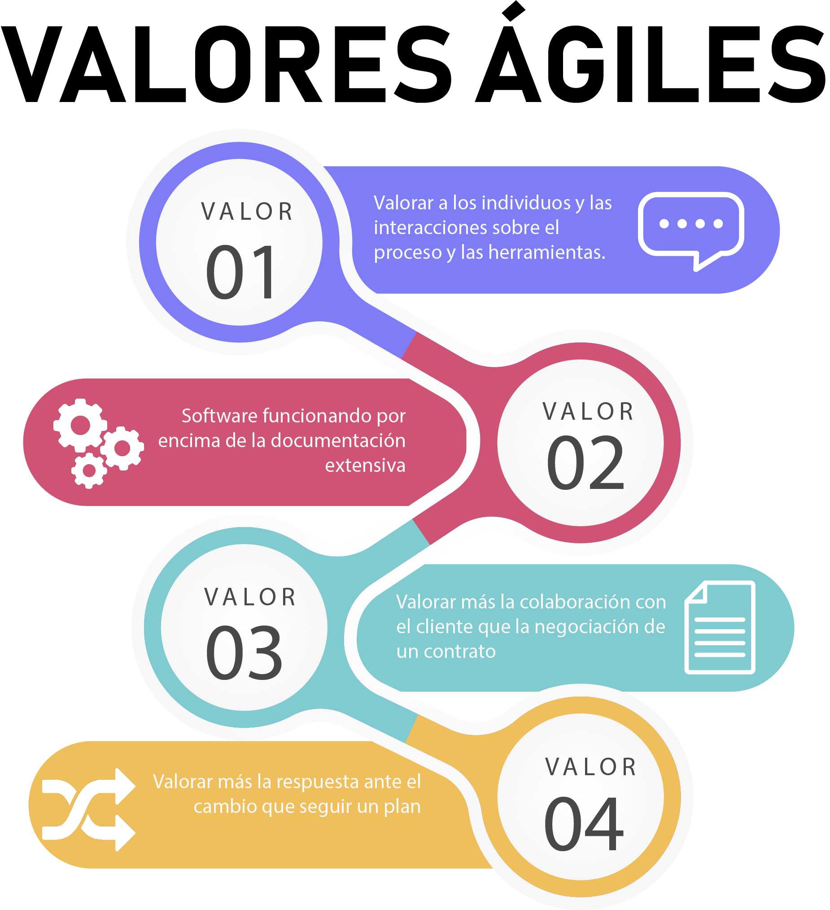
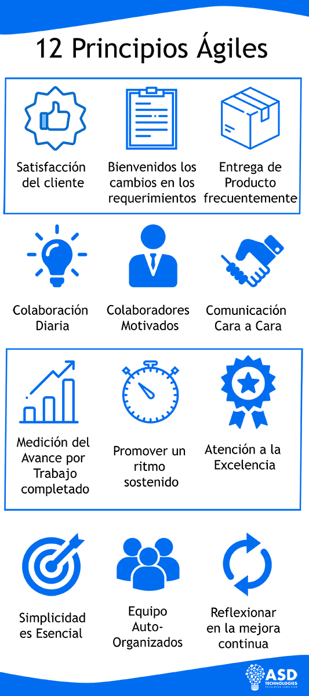
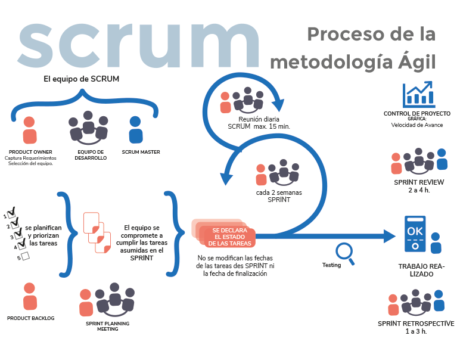
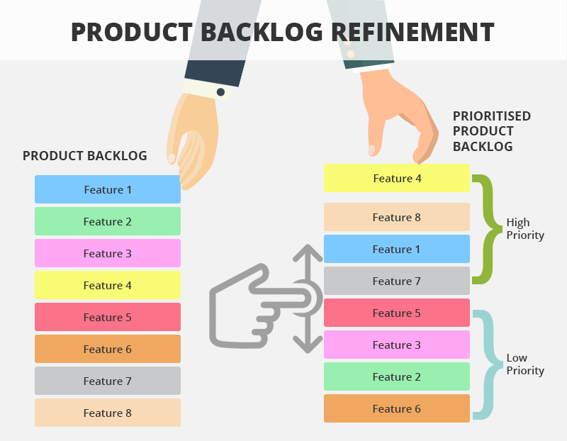
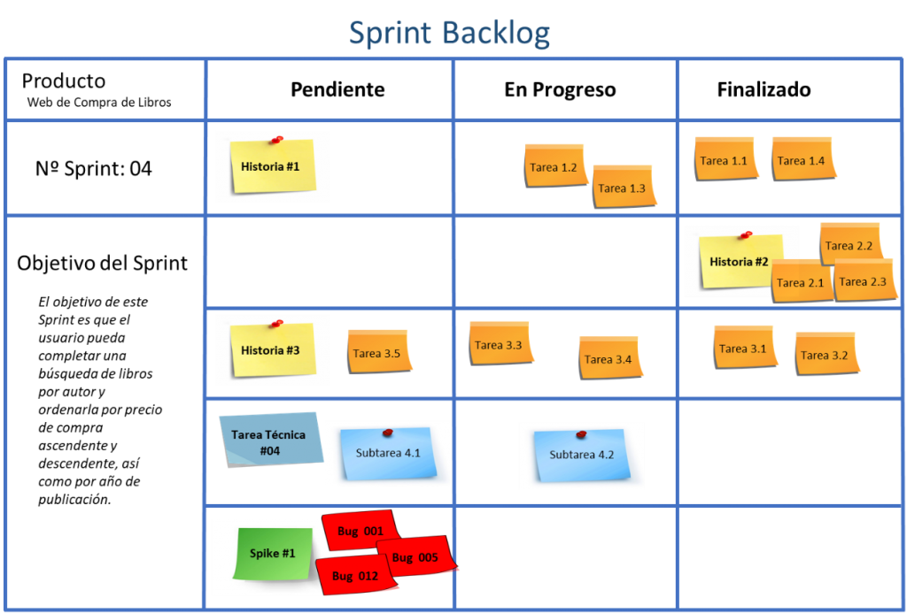

Your browser doesn't support the features required by impress.js, so you are presented with a simplified version of this presentation.
For the best experience please use the latest Chrome, Safari or Firefox browser.
Ingeniería del software
La ingeniería de software es una disciplina formada por un conjunto de métodos, herramientas y técnicas que se utilizan en el desarrollo de los programas informáticos (software).
Esta disciplina trasciende la actividad de programación.
La programación es un paso más dentro del desarrollo.
Según la definición del IEEE la ingeniería del software se define como la aplicación de un método sistemático, disciplinado y cuantificable al desarrollo, operación y mantenimiento de software
la metodología establece el camino que se debe seguir para desarrollar el software
La técnica establece el procedimiento a seguir para realizar cada uno de los pasos del camino a seguir
El producto de desarrollo es más que el código
- Incluye documentación, formación a usuarios, instalación y mantenimiento
- Para el equipo de desarrollo supone experiencia, formación, cohesión del grupo
Ciclo de vida en el Desarrollo de Software
- Requisitos: toma de requisitos de alto nivel sobre qué tiene que hacer el sistema que hay que desarrollar.
- Análisis: estudio de los requisitos.
- Diseño: elección de los diferentes componentes tecnológicos y cómo van a interactuar entre ellos
- Implementación: implementación de las diferentes funcionalidades por medio de lenguajes de programación o parametrización de paquetes o sistemas preexistentes
- Pruebas: Para confirmar que lo desarrollado se ajusta a lo requisitos y que no existe fallos de sistema.
- Implantación: aunque en ocasiones se olvida, el despliegue y capacitación de los usuarios también es parte del ciclo de vida del software y debe ser tenido en cuenta dentro de su gestión.
- Mantenimiento
Implantación
- Despliegue de infraestructura: servidores, equipos, etc
- Elementos adicionales de seguridad: cortafuegos, servidores replicados, copias de seguridad automáticas
- Formación a usuarios
Mantenimiento
- Gestión de incidencias
- Identificación de ataques de seguridad y ejecución de contramedidas
- Formación a usuarios
Modelo en cascada

Modelo en cascada
Se finaliza una etapa para continuar a la siguiente
Desventajas principales:
- No se adapta bien a los cambios en los requisitos ni a la incertidumbre ni riesgos
- Entrega final completa
Modelo iterativo e incremental
Se repite el proceso añadiendo funcionalidades a un producto entregable al final de cada iteración

Modelo iterativo e incremental
La idea principal detrás de mejoramiento iterativo es desarrollar un sistema de manera incremental, permitiéndole al desarrollador sacar ventaja de lo que se ha aprendido a lo largo del desarrollo anterior, incrementando, versiones entregables del sistema.
El aprendizaje viene de dos vertientes: el desarrollo del sistema, y su uso (mientras sea posible).





¿Estás implicado o comprometido?
Los roles en Scrum se dividen en dos grupos principales, los comprometidos y los implicados.
¿En qué se diferencia entre estar comprometido o implicado?